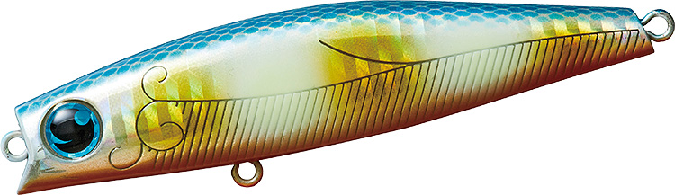
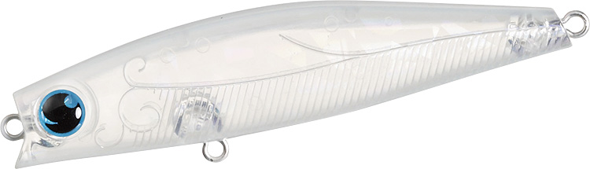
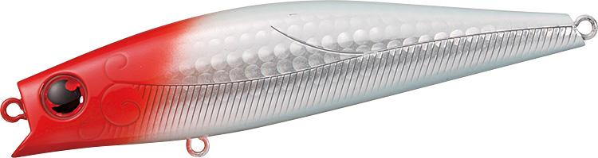
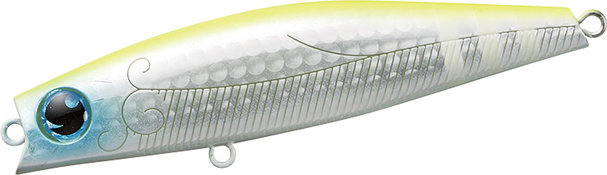

モアザン ソラリア85F
（MORETHAN SOLARIA 85F）
モアザン ソラリア85FはDAIWA（ダイワ）のフローティングミノーです。
「湾奥のプリンス」大野ゆうき氏が監修した、河川・干潟・港湾とフィールドを選ばずに使えるシリーズの中間サイズ。スローピッチなウォブンロールで小型ベイトを演出しながら、フローティングとは思えない飛距離が出るのが特徴です。

画像出典:DAIWA公式HP
スペック
- メーカー
- DAIWA（ダイワ）
- タイプ
- フローティングミノー
- 全長
- 85mm
- 自重
- 11.3g
- 有効レンジ
- 水面〜0.5m
- フック
- #5トレブル
- リング
- #3
- アクション
- スローピッチウォブンロール
- 飛距離（メーカーテスト）
- MAX 58.5m／Ave 57.7m
- ターゲット
- シーバス
- 価格
- 1,950円（税抜）
▼今すぐチェック

ソラリア85Fの特徴
流れの変化を拾ってバランスを崩す、食わせのフローティングミノー
-
流れの変化で自動的にアクションが崩れる
体高のあるボディが流れの変化を敏感に受け、アクションのバランスを半自動的に崩します。シーバスのスイッチを入れる「ヒラ打ち」のような変化が、ただ巻きの中で自然に出ます。
-
スローピッチなウォブンロール
超低速〜中速の流れが得意で、水中をゆったり泳ぐ小型ベイトのようなスローピッチのウォブリング＆ローリングで誘います。
-
フローティングとは思えない飛距離
浮力・レンジ・アクションを保ちながらウエイトバランスを詰め、85mm・11.3gでMAX58.5m（メーカーテスト）の飛距離を出せます。
-
サイズごとに違うアイカラー
70Fはシルバーアイ、85Fはブルーアイ、100Fはレッドアイと、サイズでアイの色が分けられています。
ソラリア85Fの使い方
基本は流れに対して斜め〜アップクロスに投げて、ゆっくりのただ巻き。流れの変化でアクションが崩れる瞬間が食わせのタイミングです。
ステディリトリーブで反応がないときは、ジャークを入れて足の長いダートで水面直下を逃げるベイトを演出しましょう。
ソラリア85Fの得意な状況
水面〜0.5mの浅いレンジを、流れの緩い港湾から適度に流れのある河川・干潟まで幅広く探れます。足元のスーパーシャローに付いたランカーから、少し遠くのピンポイントまで届かせたい場面に向いています。
ワンポイント
同じソラリアでも、ベイトが小さいときは70F、飛距離とレンジ（〜1.0m）が欲しいときは100Fと使い分けると、1つのシリーズで状況に合わせやすくなります。
ソラリアシリーズの使い分け
| モデル | 全長／自重 | 得意な場面 |
|---|---|---|
| ソラリア70F | 70mm／8.4g | 水面〜0.5m。より小さいベイトや食い渋りに |
| ソラリア85F | 85mm／11.3g | 水面〜0.5m。サイズと飛距離のバランスがよい中間モデル（本記事のモデル） |
| ソラリア100F | 100mm／16.4g | 水面〜1.0m。飛距離と少し深いレンジが欲しいときに |
ソラリアは3サイズとも同じスローピッチウォブンロール。ベイトの大きさと、届かせたい距離・レンジでサイズを選ぶのが基本です。
人気カラー
公式ラインナップから、使い分けやすい4色を紹介します。

ボラグローボラを意識したナチュラル系にグローを組み合わせたカラー。夜の河川や港湾で使いやすい1色。

コーラルピンクピンク系のアピールカラー。濁りや光量の少ない時間帯に。

ホロレッドヘッドホロのフラッシングとレッドヘッドで目立たせる定番系。デイゲームのサーチに。

レモンソーダミント明るいチャート系。澄み潮で目立たせたいときや、マズメの時間帯に。
画像出典:DAIWA公式HP
ソラリア85Fに似ているルアー
-
 ウィリップ87F
POP SEA CREW
詳細はこちら＞
ウィリップ87F
POP SEA CREW
詳細はこちら＞
全長87mm・自重13gのフローティングミノー。スローではロール寄り、速巻きではハイアピールのウォブリングと、2通りに使い分けられる。
-
 エルドール85SSL
アピア
詳細はこちら＞
エルドール85SSL
アピア
詳細はこちら＞
全長85mm・自重10gのスローシンキングミノー。同じ85mmクラスで、レンジ10〜50cmを少し沈めて引きたいときに。
-
 ハーデス75F
バスデイ
詳細はこちら＞
ハーデス75F
バスデイ
詳細はこちら＞
全長75mm・自重11gのシャローランナー。レンジ0〜40cmで、さらに小さいベイトに合わせたいときに。